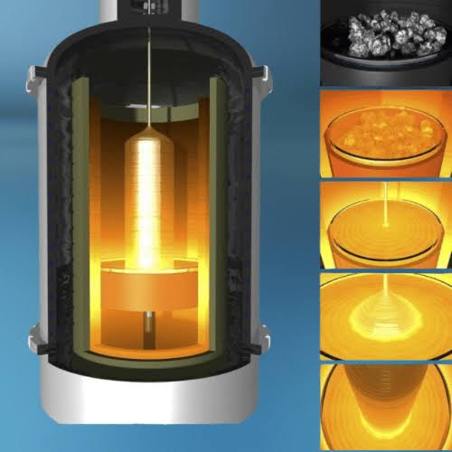

Core Expertise
Research Focus Areas
Bridging fundamental materials chemistry with production-floor semiconductor technology.

Perovskite Optoelectronics
Lead-free double perovskite synthesis (Cs₂AgInₓBi₁₋ₓCl₆), organic spacer cation engineering, and octahedral distortion-driven emission enhancement.
Explore Domain
Solar Water Splitting
Homemade photoelectrochemical (PEC) cell engineering achieving solar water-oxidation efficiency close to 70% of its theoretical limit.
Explore Domain
Silicon Ingot & Wafer Tech
Czochralski single-crystal silicon growth modeling, thermal hot-zone component design (100+ AutoCAD parts), and real-time loss-of-structure (LOS) models.
Explore DomainDeep Learning Metrology
AI Wafer Metrology Pipelines
PyTorch Convolutional Neural Networks trained on 811,000+ Wafer Maps (WM-811K dataset), combining Grad-CAM heatmaps with weighted cross-entropy loss to achieve 94.2% defect classification accuracy.
Explore Domain